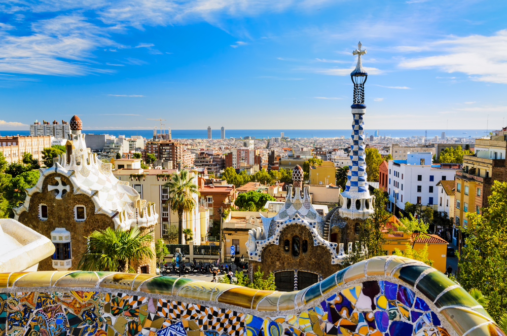

Италия-интересная страна
Ита́лия — государство в Южной Европе, в центре Средиземноморья. Входит в Европейский союз и НАТО с момента их создания, является третьей по величине экономикой еврозоны.
Граничит с Францией на северо-западе (протяжённость границы — 488 км), Швейцарией (740 км) и Австрией (430 км) — на севере, Словенией — на северо-востоке (232 км).
Территория разделена на 17 автономных сообществ и 2 автономных города. Столица — Мадрид.
Граничит с Францией, Андоррой и Португалией в Европе, и с Марокко в Северной Африке.
В течение столетий возникало множество гипотез по поводу этимологии названия «Испания». Считается, что оно происходит от римского топонима Hispania, происхождение которого остаётся не до конца выясненным, хотя документально подтверждено, что финикийцы и карфагеняне именовали регион Spania, поэтому наиболее распространённой версией этимологии является семитско-финикийская[10][11].
Видео о Италии
Карта Италии
Гимн Италии